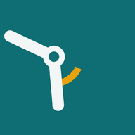

KneeAngle
Misst den Kniewinkel und vibriert, bevor das Knie überstreckt.
Dieser Browser kann kein Bluetooth. Bitte Chrome auf einem Android-Handy verwenden.
Gerät einschalten, dann verbinden. Beim ersten Mal innert 60 Sekunden nach dem Einschalten, damit dieses Handy gekoppelt wird.
–
nicht verbunden
–kleinster Winkel
–grösster Winkel
–Überstreckungen
Kalibrieren
1. Sensoren
–
Einmalig, vor dem Anlegen, auf dem Tisch. Etwa 2 Minuten.
2. Gelenk
–
Nach jedem Anlegen am Bein. Etwa 1 Minute.
3. Nullpunkt
–
Legt fest, was 0° ist. Bei Bedarf jederzeit neu.
Reihenfolge beim ersten Mal: 1, 2, 3. Danach genügen nach jedem Anlegen die Schritte 2 und 3.
Alarm
Ausgeschaltet vibriert das Gerät nie. Die Messung läuft weiter.
Starke Vibration, sobald das Knie so weit oder weiter gestreckt ist. 0° = gerade, negativ = überstreckt.
Verhindert Dauer-Pulse, wenn man ruhig im Vorwarnbereich steht.
Feineinstellungen
Der Alarm endet erst, wenn das Knie um diesen Betrag wieder gebeugt ist. Verhindert Flattern an der Grenze.
Gleicht die Anlaufzeit des Motors aus. Empfohlen: 40 ms. Höhere Werte warnen früher, lösen aber bei schnellem normalem Strecken öfter unnötig aus. 0 = aus.
Verschiebt die Grenze um die aktuelle Messunsicherheit in die sichere Richtung.
Nur einschalten, wenn der Spannungsteiler an A0 angeschlossen ist.
Verlauf
Seit dem Einschalten
–Überstreckungen
–Vorwarnungen
–Annäherungen
Gespeicherte Überstreckungen
Das Gerät speichert sie auch ohne Handy.
| Zeit | Winkel | Grenze | Dauer |
|---|
Winkel über die Zeit
Mehr
Dieses Handy
Kopplung
–
Gerät
Diagnose
App-Version . Prototyp für Entwicklung und Test, kein Medizinprodukt.